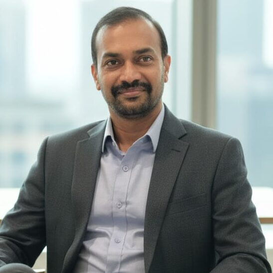
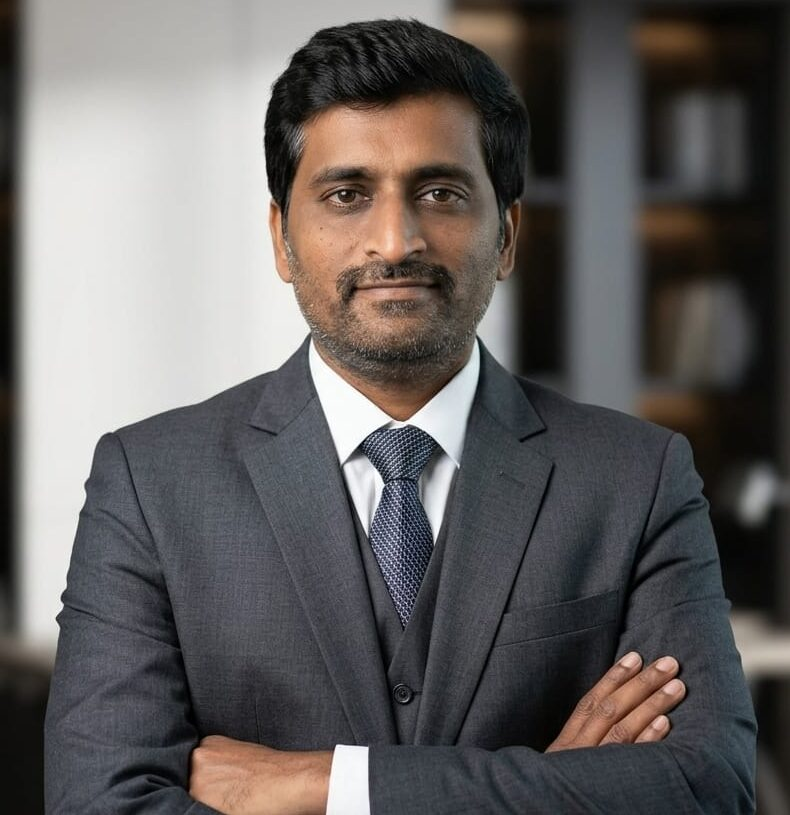
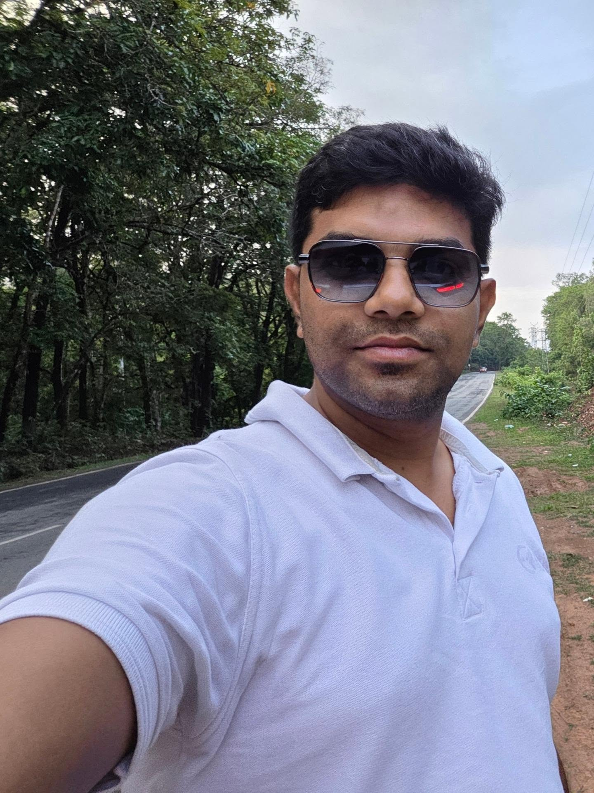

solar capacity commissioned
0+ MWpclean energy
commissioned
commissioned
India’s energy transition
ENERGY INFRASTRUCTURE, REIMAGINED
Built on values.
Driven by energy.
We build India’s clean-energy assets and the reliable power corridors that connect them — with disciplined execution from planning to handover.
THE ENERIC DIFFERENCE
Infrastructure that serves tomorrow.
Eneric Power is an emerging EPC company, founded by seasoned professionals with deep on-ground experience across renewable energy and power evacuation infrastructure.
We pair the agility of a modern organization with rigorous engineering, safety-first delivery and transparent partnerships.
Get to know us →clean units generated annually
tonnes CO₂ avoided annually
lost-time accidents
HOW WE DELIVER
Built for
the last mile.
Integrated capability turns ambition into assets: disciplined planning, reliable sourcing, assured quality and clear on-site ownership.
Fast-track execution
Site-led planning and decisive coordination keep critical workfronts moving.
Quality, safety & compliance
Field checks, assurance gates and uncompromising delivery standards at every stage.
Integrated PMC + SCM
Project controls and supply-chain intelligence working together from source to site.
Scalable resources
Responsive teams and partner networks that mobilise for changing project needs.
ENERIC POWER IN ACTION
Built where it
matters most.
FOUNDING TEAM — LEADERSHIP
The people behind
Eneric Power.
Our leadership brings decades of EPC, technology and strategic business experience to every project.
50+ years combined EPC & infrastructure experience₹1,000 Cr+ project leadership experience3 integrated energy disciplines

HEAD OF GREEN ENERGY
Phani Kumar Raju Nadimpalli
GREEN ENERGY LEADERSHIP
Phani Kumar Raju Nadimpalli
Turning clean-energy ambition into high-performance execution.
With over two decades in the energy sector, Phani has led and executed projects across India exceeding ₹1,000 crore. He brings disciplined project delivery and stakeholder coordination to complex, large-scale environments.
Core strengths
Connect on LinkedIn ↗- Multi-MW renewable project delivery
- High-performance execution teams
- Stakeholder & site coordination

HEAD OF SUPPLY CHAIN
Subbaraju Vatsavayi
SUPPLY CHAIN LEADERSHIP
Subbaraju Vatsavayi
Bringing cost discipline and resilient sourcing into every project plan.
With about 20 years of procurement and supply chain experience across leading power and infrastructure companies, including NCC Ltd, Subbaraju builds vendor ecosystems that support cost-effective, timely execution.
Core strengths
Connect on LinkedIn ↗- Strategic sourcing & vendor development
- Material-cost optimisation
- Multi-state procurement coordination

HEAD OF BLUE ENERGY
Vamsidhar Gubbala
BLUE ENERGY LEADERSHIP
Vamsidhar Gubbala
Building reliable, scalable power infrastructure for India’s next chapter.
With about 18 years across transmission EPC, renewable energy and digital technologies, Vamsidhar specialises in large-scale power evacuation and infrastructure projects across India.
Core strengths
Connect on LinkedIn ↗- EHV evacuation & transmission execution
- Future-ready infrastructure strategy
- Renewable and digital integration
WHAT WE DO
One purpose.
Three disciplines.
From source to grid, Eneric brings clarity, capability and care to every stage of infrastructure delivery.
01
GREEN ENERGY DIVISION
Clean power,
built to last.
We deliver solar assets from foundations to commissioning. Our growth agenda extends into the renewable infrastructure that makes clean power more flexible, accessible and resilient.
100+ MWpcommissioned
and celebrated
and celebrated
EXPANDING INTO
- Solar EPC, BOS & grid integration
- Battery energy storage systems (BESS)
- EV charging infrastructure
- Green hydrogen infrastructure
- Wind energy infrastructure
02
BLUE ENERGY DIVISION
Power corridors
that connect.
We execute high-voltage evacuation infrastructure today, while expanding into the reliable, high-capacity networks that will support India’s next wave of industry and electrification.
EXPANDING INTO
- EHV transmission & distribution
- Railway electrification
- Re-conductoring & capacity enhancement
- Data-centre power infrastructure
- Underground (UG) cabling & system strengthening
03
PMC + SUPPLY CHAIN
Control at every
critical point.
Our project management consultancy integrates supply chain strategy at its core, bringing cost, quality, schedule and sourcing into one accountable delivery system.
- Contracts, controls & schedule monitoring
- Vendor strategy & strategic sourcing
- On-site quality, safety & compliance
FEATURED EXECUTION
From Maharashtra,
for a cleaner India.
Our Green Energy portfolio includes 100+ MWp commissioned across PM-KUSUM and MSKVY 2.0. We are also executing 100+ MWp of solar projects in Maharashtra, with connected evacuation works.
100+ MWpclean energy
commissioned
commissioned
SELECTED PROJECT EXPERIENCE
Proof, in every
workfront.
A snapshot of the programmes and infrastructure scope that shape our execution capability.
GREEN ENERGY100+ MWp
Solar portfolio delivery
PM-KUSUM and MSKVY 2.0 solar programmes in Maharashtra, spanning foundations, BOS works, electrical integration and commissioning.
MAHARASHTRA • ACTIVE PORTFOLIOBLUE ENERGY400 kV
Power evacuation infrastructure
High-voltage transmission execution supporting renewable energy evacuation and a stronger regional grid.
SOLAPUR, MAHARASHTRA • 56 KM LINEPMC + SCM360°
Controls that keep delivery moving
Schedule review, material readiness, QA/QC, safety assurance and action closure in one accountable project rhythm.
INTEGRATED DELIVERY SYSTEMBLUE ENERGY IN ACTION
Making the grid
ready for more.
The 400 kV D/C Quad Moose line is a 56 km power-evacuation project in Solapur, Maharashtra — delivered as execution partner to Arvensis Energy.
400 kV56 KMSOLAPUR, MAHARASHTRA
ZERO-COMPROMISESafety &
quality.
quality.
ASSURANCE IN ACTION
Every milestone.
Every safeguard.
For Eneric, reliable infrastructure begins with reliable ways of working. Our site assurance culture holds quality, safety and compliance together—every day, not only at handover.
01 Daily toolbox talks & workfront readiness02 Permit-to-work and proactive risk controls03 QA/QC inspection and testing checkpoints04 Site audits, action closure & learning loops
POLICY GREENLOOP
Progress that
comes full circle.
GreenLoop is our operating system for responsible execution—embedding environmental accountability, quality discipline and measurable project control from planning through handover.
01 — 04Resource efficiency
Source responsibly and reduce material and energy intensity.
Waste minimization
Cut waste at the source; maximize reuse, recycling and recovery.
Ecological responsibility
Protect ecosystems with lower-impact design and operation.
Continuous improvement
Track performance and raise our standards through innovation.
GREENLOOP PROJECT INTELLIGENCE
Transparent control.
Confident delivery.
This public-safe preview shows how our project teams monitor delivery, safety, quality and sustainability—without displaying commercial or financial information.
WorkstreamDeliveryQuality & SafetyGreenLoop
Green Energy PortfolioMilestones monitoredField audits activeResponsible sourcing
Blue Energy ProgrammeSchedule controlledQA gates trackedMaterial traceability
PMC + Supply ChainAction closure reviewCompliance checksVendor accountability
Our control rhythm combines site observations, quality checkpoints, permit-to-work discipline and action-closure reviews—giving project stakeholders clarity without compromising confidential project data.
GreenLoop turns project data into better operating decisions: use less, recover more, protect local ecosystems and continually improve the delivery standard.
ENERIC COMMAND CENTER
Executive clarity,
at project speed.
Our advanced Command Center gives authorised teams a single operational view across projects—connecting milestones, delivery controls, site assurance, materials, manpower and decision actions.
Portfolio intelligenceMilestone & DPR controlQuality, safety & advisory actionsMaterial & workforce visibility
Request controlled access →Private operational environment. Commercial, payroll and client-confidential information is never shown on this public website.PROJECT OPERATIONS MAP
DECISION ACTIONSSchedule review & action closure Quality gate confirmation Resource readiness review
Non-confidential representation
CAREERS AT ENERIC
Build the energy
future with us.
We bring experienced EPC leadership together with the speed, responsibility and curiosity of a growing energy company.
New-age agility, deep execution experienceEthical engineering with no shortcutsGreen energy, grid and PMC exposure
Explore opportunities →START A CONVERSATION
Let’s build what
matters next.
connect@enericpower.com ↗+91 89789 75533
Plot No. 264, SS Arcade, 3rd Floor, LIG, HUDA Colony, Nallagandla, Serilingampally, Hyderabad, Telangana